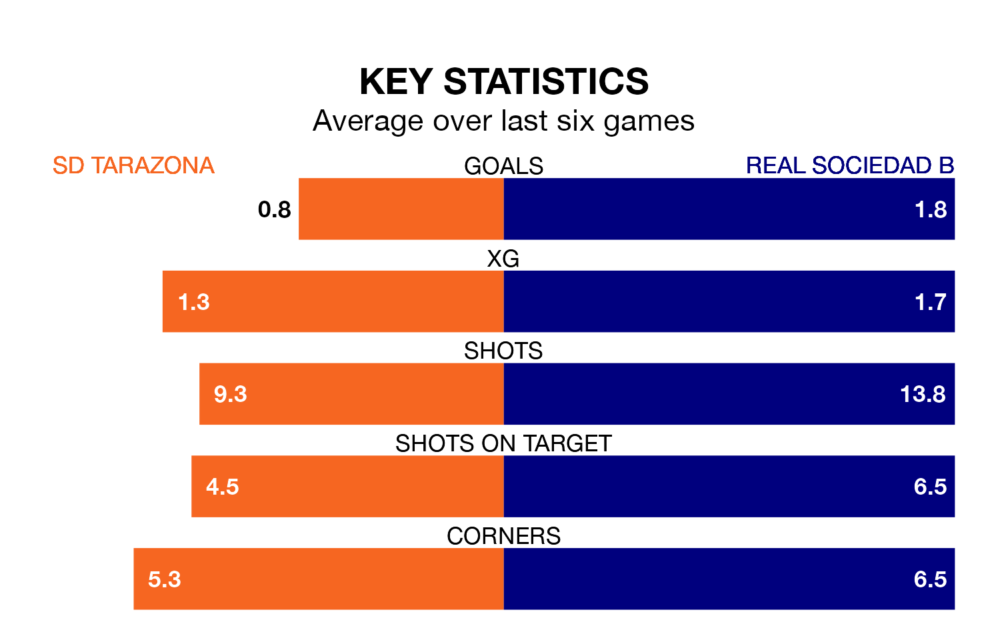

SD Tarazona host Real Sociedad B on Sunday on the back of four consecutive wins in Primera Division RFEF Group 1.
Tarazona have picked up 13 points from their last six games, and they face a Sociedad B side who have lost their last two matches, and collected five points from the last possible 18.
With 24 goals in 32 games so far this season, Tarazona are the league's second-lowest scorers with 0.8 goals per game. But they are conceding fewer than average too, letting in 27 goals at a rate of 0.8 per game.
Sociedad B, meanwhile, are above average scorers, with 1.2 goals per game, compared to a league average of 1.1. They have also conceded 1.2 goals per game.
In Ekain Azkune Astarloza, the away side have one of the league's sharpest shooters so far this season. He has notched seven goals in 19 appearances, to sit fifth in the scoring charts.
His goal rate of one every 194 minutes is much quicker than that of David Cubillas Peña, the hosts' top scorer with a goal every 434 minutes, and a total of four goals in 22 games.
Sociedad B are ninth in the table after 32 games, of which they have won nine and drawn 13, earning 40 points.
Tarazona are two places behind Sociedad B in 11th, with nine wins and 12 draws putting them on 39 points.
Tarazona's last match was on April 14, a 1-0 win against Gimnàstic de Tarragona, with Liberto Luis Beltrán Martínez getting the goal for Tarazona.
Sociedad B lost 3-1 against Cultural y Deportiva Leonesa last time out, on April 13, with Pablo Marín on the scoresheet.
Updated: 11:31 (UTC), 15/04/24